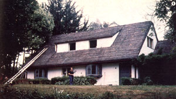
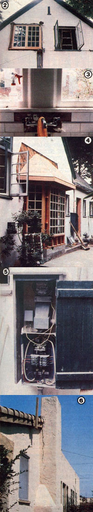

Restoring old dwellings for profit can bring in a good income... if you know what to look for.
Rehabbing-that is, buying up old dwellings and restoring them for profitable resale-can, for folks who are willing to invest a bit of initiative and effort, net up to $40,000 per house. But unless the buyer knows exactly how to choose a home to rehab, he or she could easily take on a loser and end up kissing a lot of hard-earned money goodbye.
HOW NOT TO GET STARTED
I know of one man who found what he thought was an incredible bargain for only $23,500. Sure, the house needed a little repair, but it seemed like a steal at the price. Unfortunately, as soon as he started to work on the dwelling, my acquaintance found that the more things he fixed, the more things he discovered that needed to be fixed.
The wiring, for example-which had been added to the house after it was built in 1910-was all exposed and had to be brought up to code. He wound up replacing the plumbing, too . . . and these two jobs added $12,000 to his cash outlay. A new roof cost him $1,500, and installing a foundation (after finding out that there wasn't one) set him back another $4,500.
Next, the disheartened owner discovered that much of the wooden framing had been chewed to lace by an infestation of termites. Fumigation and wood replacement cost the poor fellow $2,000 more.
And, in addition to the surprises, there were the expected repairs to be made. The would-be home broker had anticipated putting in a new floor and insulating it, for example, and that ran him $6,000 . . . while painting, wallpapering, and kitchen remodeling consumed $8,500 more.
All in all, our bargain hunter poured an additional $34,500 into his $23,500 "steal". The house had cost him a total of $58,000 . . . and after the work was completed, the resale value was just $45,000! If he had only known what to look for and made a few strategic phone calls, the unfortunate man could have avoided the heartbreak (and budget-break) of getting in over his head.
THE COUNTDOWN
However, you can profit from that sad tale by using the following "Rehabber's Checklist" as a guide to avoid pitfalls in purchasing a fixerupper.
[1] Price the cost of repairs before you purchase. In fact, it's best to call electricians, plumbers, carpenters, masons, and carpetlayers-getting rough estimates of typical jobs or the approximate price of work per square foot-before you even start shopping. (After all, if a dwelling is indeed a bargain, another buyer could snatch it out from under your nose while you waste time getting estimates after the fact.) Find out how much it costs to insulate an attic, for instance, or to replace rotted floors, or to rewire a house. Then, with the average figures in mind, you can add the potential cost of repairs to the price of any given house.
[2] Once you've found a home that you might want to purchase, examine its structural condition carefully. What kind of foundation does it have? Are there shingles missing, or do water stains on the walls and ceilings indicate a leaky roof? Require that a termite inspection be made, and ask the seller to pay for this and for any necessary repairs due to infestation.
[3] Make sure that all the building's utilities are serviceable. Is the plumbing functional? Is the wiring safe? Is the furnace efficient?
[4] Find out about zoning. Should the house you're looking at be in a commercial zone, you might be able to sell it as business property . . . and that switch in classification would likely raise its value. However, if you're looking at a lot with two houses on it and find the zoning to be R-1, you must realize that the site is zoned for one house, not two. Perhaps the law has changed since the previous owner acquired the property, but you-as the new owner-could be forced to obtain a zoning variance (permission to change the use of a piece of property for a certain length of time).
[5] Don't be put off by looks alone. A filthy house with unkempt grounds will tend to discourage buyers who see only appearances and not potential, so the price of such property is often low. A shrewd person who wants to make a profit, though, can easily see that by removing a few truckloads of trash and using some soap and water and elbow grease, he or she can make that eyesore very livable. The same principle holds true for homes with "facial" damage to existing paint, carpets, linoleum, wallpaper, and landscaping. Most cosmetic problems are easily and (as compared with the cost of structural damage) inexpensively repaired.
[6] Know the market. Before you make a purchase, you ought to have a good idea of how much people will likely pay to rent or buy the house. Then subtract the purchase price and the probable repair costs from the potential market price, and the difference will, of course, represent your profit (or your loss).
HEDGING YOUR BET
If everything checks out in your favor, then you're ready to make an offer. On the other hand, few houses will be all you're looking for, so when you find one that you think you'd like to buy but that doesn't quite measure up in every respect, consider making an offer anyway . . . but with certain contingencies that will relieve you of any obligation should your dream house turn out to be a nightmare. For example, you might make your offer contingent upon the house's living up to current building codes. Then if-upon inspection-it proves to be not up to snuff, you'll have the option of backing out of the purchase . .. or, perhaps, of acquiring the property for a lower price.
Remember, though, that adding too many contingencies to a bid could leave you little room to bargain . . . so if your offer is contingent upon a number of factors, be prepared to pay nearly the full asking price.
If you do manage to find a house that still seems-after all your investigation-to be a good investment, roll up your sleeves and dig in! You'll have a lot of work ahead of you, but-because you did your homework in advance-it should be only a matter of time before you start reaping the rewards!
EDITOR'S NOTE: More information on avoiding pitfalls when buying a home-to rehab and sell or to live in-can be found in Les Scher's excellent book Finding and Buying Your Place in the Country. It's available in many bookstores and libraries or, for $9.95 plus 95 cents shipping and handling, from Mother's Bookshelf(restricted), P.O. Box 70, Hendersonville, North Carolina 28791.
|
 [1] This fixer-upper was found in an expensive neighborhood, and-when finished-should have a resale value of more than $250,000. [2] Remodeling windows... [3] putting in new tile, and... [4] adding on a bay window sunspace are all cosmetic repairs that can be taken care of at relatively low cost. But a house requiring major renovations such as... [5] new electrical wirings or... [6] chimney repair may prove to be a budget-breaker. Follow the ""Rehabber's Checklist"" to avoid these pitfalls. |
 |
|